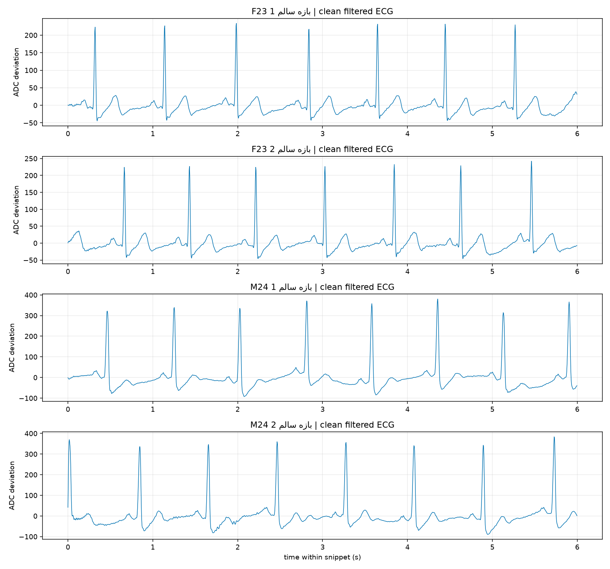
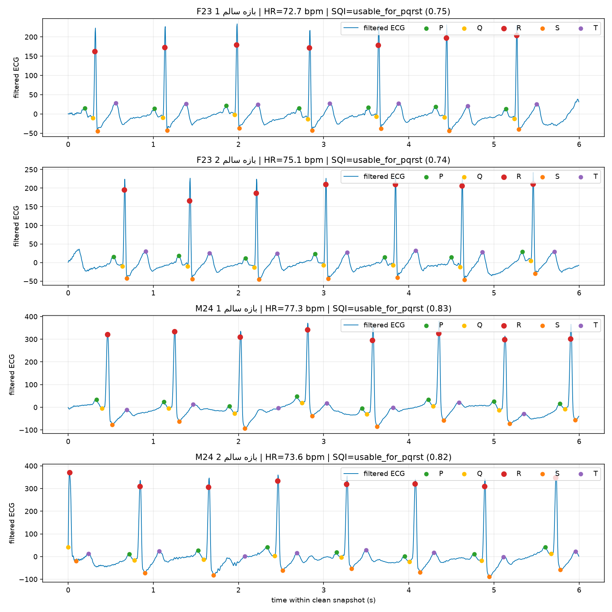
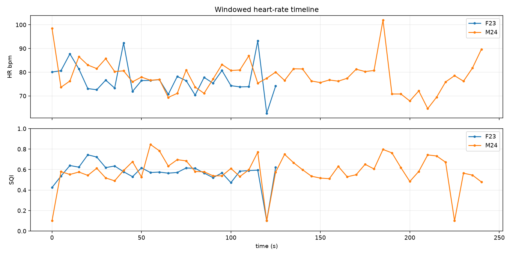
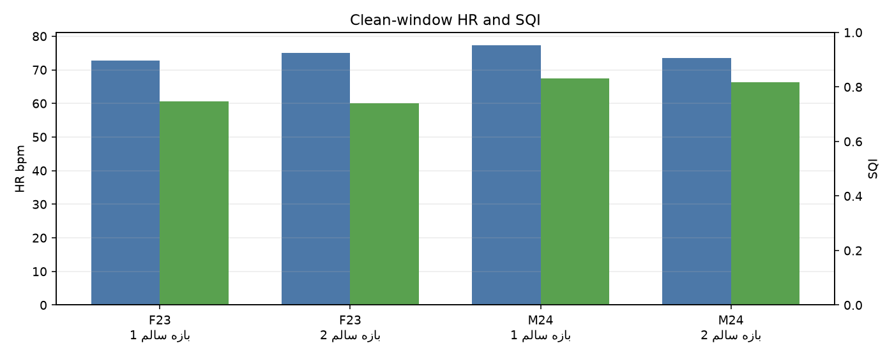
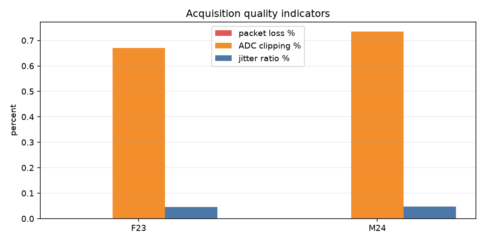

Educational prototype; not a medical device; not for diagnosis.
Only clean 6-second windows selected by SQI, clipping, lead-off and RR-stability checks are used for the PQRST analysis.
| Subject | Duration | Valid samples | Packet loss | Checksum errors | SQI | Mean HR | Rule-based output |
|---|---|---|---|---|---|---|---|
| خانم ۲۳ ساله (F23) | 130.64 s | 32662 | 0.00% | 0 | usable_for_pqrst (0.80) | 79.48 bpm | Moderate preliminary rhythm warning |
| آقای ۲۴ ساله (M24) | 246.28 s | 61570 | 0.00% | 0 | usable_for_pqrst (0.94) | 78.06 bpm | Low preliminary rhythm warning |
| Subject | Clean window | Range | Mean HR | RR CV | SDNN | RMSSD | P-R peak | QRS | QT | QTc | SQI | Clipping | Rule-based output |
|---|---|---|---|---|---|---|---|---|---|---|---|---|---|
| خانم ۲۳ ساله (F23) | بازه سالم 1 | 24.0-30.0 s | 72.70 bpm | 0.024 | 19.4 ms | 27.1 ms | 120.0 ms | 52.6 ms | 266.9 ms | 294.3 ms | usable_for_pqrst (0.75) | 0.00% | Normal rhythm candidate |
| خانم ۲۳ ساله (F23) | بازه سالم 2 | 18.0-24.0 s | 75.06 bpm | 0.030 | 23.6 ms | 30.8 ms | 124.0 ms | 52.6 ms | 269.1 ms | 300.9 ms | usable_for_pqrst (0.74) | 0.00% | Normal rhythm candidate |
| آقای ۲۴ ساله (M24) | بازه سالم 1 | 132.0-138.0 s | 77.26 bpm | 0.010 | 8.1 ms | 14.4 ms | 123.0 ms | 121.5 ms | 326.9 ms | 371.0 ms | usable_for_pqrst (0.83) | 0.00% | Low preliminary rhythm warning |
| آقای ۲۴ ساله (M24) | بازه سالم 2 | 77.0-83.0 s | 73.58 bpm | 0.013 | 10.3 ms | 11.9 ms | 119.4 ms | 108.5 ms | 301.7 ms | 334.8 ms | usable_for_pqrst (0.82) | 0.00% | Normal rhythm candidate |




